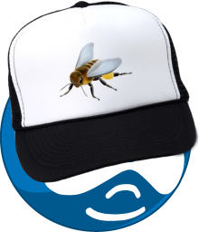
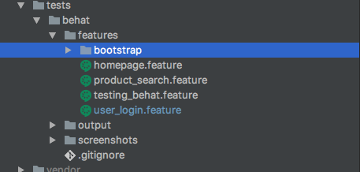

Behat Crash Course
Chris Zietlow \ @aczietlow
Why should you bother?
- Better code quality
- Less Regression
- Better Acceptance Criteria
- Greater understanding of code base
- Faster development
What is quality anyway?

Faster development you say?
Why isn't everyone doing this testing thing?
Testing takes time
Case studies conducted at Microsoft and IBM indicate that teams that adopt TDD experience 40% to 90% bugs, which results in 15-35% additional development time.
Enter Behat: Our hero
Behat is a BDD (Behavior Driven Development) framework written in PHP
Seriously, we can do this in Drupal?
There's the module for that, because of course there is*
Drupal Extension
This "module" comes with many many opinions.
Installation
Composer.json
"require": {
"behat/behat": "3.0.*@stable",
"drupal/drupal-extension": "3.0.*@dev"
}
Behat.yml
default:
suites:
default:
contexts:
- FeatureContext
- Drupal\DrupalExtension\Context\DrupalContext
extensions:
Behat\MinkExtension:
That simple configuration is a bit of a lie
# Default profile.
# Common settings for all profiles
default:
autoload:
'': %paths.base%/tests/behat/features/bootstrap
suites:
default:
paths: [ %paths.base%/tests/behat/features ]
contexts:
- FeatureContext:
parameters:
screenshot_dir: %paths.base%/tests/behat/screenshots
- Drupal\DrupalExtension\Context\DrupalContext
- Drupal\DrupalExtension\Context\MinkContext
- Drupal\DrupalExtension\Context\MessageContext
- Drupal\DrupalExtension\Context\DrushContext
# The twig formatter.
# formatters:
# html:
# output_path: %paths.base%/output
extensions:
Behat\MinkExtension:
goutte: ~
selenium2: ~
default_session: goutte
javascript_session: selenium2
Drupal\DrupalExtension:
blackbox: ~
drush: ~
api_driver: "drupal"
# Map template regions.
region_map:
header: "#header"
content: "#content"
footer: "#footer"
# Map selectors.
selectors:
message_selector: '#messages'
error_message_selector: '#messages .messages.error'
success_message_selector: '#messages .messages.status'
# Load custom Dixon sub contexts.
subcontexts:
paths:
- %paths.base%/tests/behat/features/bootstrap
text:
password_field: "pass"
username_field: "name"
#@TODO fix this so that it's not the default formatter.
# Pretty Twig formatter.
# emuse\BehatHTMLFormatter\BehatHTMLFormatterExtension:
# name: html
# renderer: Twig
# file_name: index
# print_args: true
# print_outp: true
# loop_break: true
# Docker profile.
# For use inside the CLI container in Docksal.
docker:
extensions:
Behat\MinkExtension:
# URL of the site when accessed inside Docksal.
base_url: http://web
# Configure browser to be used. Browser must be available on wd_host.
# Stick with chrome by default. It's 2x faster than firefox or phantomjs (your results may vary).
browser_name: chrome
selenium2:
wd_host: http://browser:4444/wd/hub
capabilities: { "browser": "chrome", "version": "*" }
Drupal\DrupalExtension:
drupal:
# Site docroot inside Docksal.
drupal_root: /var/www/web
drush:
# Site docroot inside Docksal.
root: /var/www/web
Don't worry we've made it easy to manage
See the README
Define Features
Tests are saved in .feature files
User Login
Client Requirement
I want to be able to log into my website in order to edit my content.
User Login
Requirements we can use
As a an anonymous user,
I want to be able to log into my website,
So that I can edit my content.
User Login
Acceptance Criteria
What does it mean to be logged in? How do we know that we are logged in?
Given I am an anonymous user
When I am at "user/login"
And I fill in "name" with "admin"
And I fill in "pass" with "admin"
And press "Log in"
Then I should see the link "Log out"
User Login
Acceptance Criteria
How do we check can edit content.
Given I am logged in as a user with the administrator role
When I am at "node/add/page"
Then I should see "Create Basic page"
And I should get a 200 HTTP response
User Login
Slap it in a feature file and boom you have your test.
#./features/user_login.feature
@api
Feature: User Login.
As a an anonymous user,
I want to be able to log into my website,
So that I can edit my content.
Scenario: I can log in.
Given I am an anonymous user
When I am at "user/login"
And I fill in "name" with "admin"
And I fill in "pass" with "admin"
And press "Log in"
Then I should see the link "Log out"
Scenario: I can edit content
Given I am logged in as a user with the administrator role
When I am at "node/add/page"
Then I should see "Create Basic page"
And I should get a 200 HTTP response
Executing tests
$ bin/behat features/user_login.feature
Executing tests
Now with 42% more live demo
The magic behind how it works
The Tech Stack
- Behat
- Mink
- Drivers
- Emulators
- Controllers
- Browsers
Browsers
This is not a place for cross browser testing
- firefox
- chrome
Drivers
- Emulators*
- Controllers*
Mink
An abstraction API layer that handles communication with all drivers
$element = $session->getPage();
$element->findAll($selector, $locator);
$element->getText();
$element->getHtml();
$element->isVisible();
$element->click();
$element->press();
$element->check();
$element->uncheck();
Anatomy Feature
@api
Feature: Content Type Event
As an anonymous user
I want to view data related to an Event
So that I can decide it is something I would like to attend.
Scenario: Add an event node and verify that the necessary fields exist.
Given I am an anonymous user
And an "Event Terms" term with the name "camp"
And an "Event Terms" term with the name "drupal"
And "event" content:
| title | field_event_location | field_event_date | field_event_tags | status |
| Drupal Camp | Orlando | 2016-04-11 9:00:00 | camp, drupal | 1 |
When I am at "content/drupal-camp"
Then I should see the text "Florida Drupal Camp"
And I should see the text "Orlando"
And I should see the text "Saturday, April 11, 2016"
Step Defintions
Each scenario step maps to a function that performs the step
Given I am an anonymous user
/**
* @Given I am an anonymous user
* @Given I am not logged in
*/
public function assertAnonymousUser() {
// Verify the user is logged out.
if ($this->loggedIn()) {
$this->logout();
}
Step Definitions
Out of the box the Mink and Drupal Drivers will provide a lot of step definitions that you can use.
# definitions list
$ behat -dl
default | When I visit the login page
default | Given I am an anonymous user
default | Given I am not logged in
default | Given I am logged in as a user with the :role role(s)
default | Given I am logged in as a user with the :role role(s) and I have the following fields:
default | Given I am logged in as :name
default | Given I am logged in as a user with the :permissions permission(s)
default | Then I should see (the text ):text in the ":rowText" row
default | Given I click :link in the :rowText row
Custom Step Definitions
Feature: Migrations
As an editor of the website
I want the workbench module enabled
So that I can create custom editing work flows
Scenario: Confirm the workbench module is installed
Given the "workbench" module is installed
Custom Step Definitions
Custom step definitions go in features/bootstrap/FeatureContext.php**
//features/bootstrap/FeatureContext.php
use Drupal\DrupalExtension\Context\RawDrupalContext;
use Behat\Behat\Context\SnippetAcceptingContext;
use Behat\Gherkin\Node\PyStringNode;
use Behat\Gherkin\Node\TableNode;
/**
* Defines application features from the specific context.
*/
class FeatureContext extends RawDrupalContext implements SnippetAcceptingContext
{
}
Custom Step Defintions
/**
* Asserts that a given module exists and is enabled.
*
* @Given the :module module is installed
*/
public function assertModuleExists($module)
{
if (module_exists($module)) {
return TRUE;
}
$message = sprintf('Module "%s" is not installed.', $module);
throw new \Exception($message);
}
More custom defintions
Then "events" migration is complete$/
/**
* Asserts the given migration is complete.
*
* @Then the :machine_name migration is complete$/
*
* @throws /Exception if the migration did not complete.
*/
public function assertMigrationIsComplete($machine_name)
{
$migration = Migration::getInstance($name);
if ($migration->isComplete()) {
return TRUE;
}
$message = sprintf('The "%s" migration is not complete.', $name);
throw new \Exception($message);
}
Doing things in the browser
We use Mink to interact with the browser
Some common usages of the Mink API
$element = $session->getPage();
$element->findAll($selector, $locator);
$element->getText();
$element->getHtml();
$element->isVisible();
$element->click();
$element->press();
$element->check();
$element->uncheck();
References
- tests are awesome
- tests are good for you, the client, and the product
- Drupal Extension (3.x) Documentation
- Behat (3.x) Documentation
- Mink Documentation
- Follow me on twitter: @aczietlow